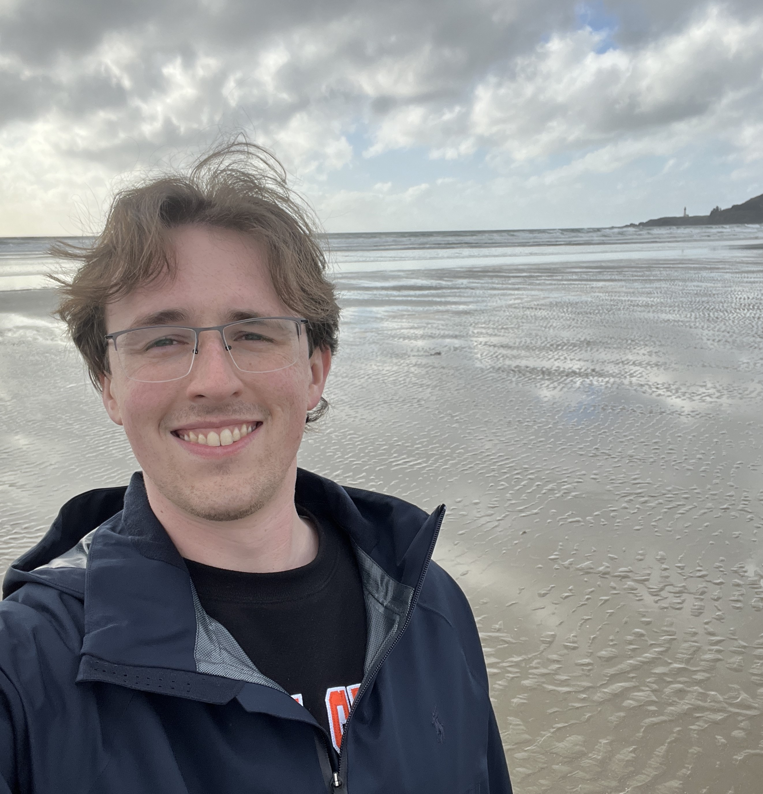

About Me
|
Hi! I'm Nathan Butler.
I am a Robotics MS student in the Robotic Decision Making Lab, part
of the Collaborative
Robotics and Intelligent Systems (CoRIS) Institute at
Oregon State University. I am advised by Dr. Geoff Hollinger.
My research explores the coordination challenges and possibilities presented by robotic mothership-passenger systems. This work lies at the intersection of centralized and distributed multi-robot coordination, where I aim to harness the benefits of both approaches to develop robust hierarchical teaming methods for uncertain and dynamic environments. For questions related to research or potential collaborations, please reach out at butlnath@oregonstate.edu. For other professional or personal inquiries, feel free to contact me at nathanbutler.nlb@gmail.com. |
 |
Updates
- [01/27/2025]: Our paper "Hybrid Decentralization for Multi-Robot Orienteering with Mothership-Passenger Systems" has been accepted to ICRA 2025
- [09/27/2024]: Started the second year of my MS
- [09/15/2024]: Submitted my first paper to ICRA 2025
- [04/26/2024]: Presented poster "Pseudo-Centralized Mission Planning for Under-Ice Robotic MOTHERSHIPs" at 2024 Northwest Robotics Symposium
- [09/15/2023]: Started my MS in Robotics at Oregon State University
Experience
- Sep. 2023 - Present: Graduate Research Assistant, Robotic Decision Making Lab, CoRIS Institute, Oregon State University
- Jan. 2022 - July 2023: Undergraduate Research Assistant, ABE Automation and Robotics Lab, Department of Ag. and Biosystems Engineering, Iowa State University
- Aug. 2021 - May 2023: Systems Director, Cardinal Space Mining Club, Iowa State University
- May 2021 - Dec. 2021: Mechanical Engineer Co-Op, Seed Technology and Innovation Team, Corteva Agriscience
- Jan. 2021 - May 2021: Controls Intern, Intelligent Control and Autonomy Group (Electrified Aircraft Propulsion), NASA Glenn Research Center